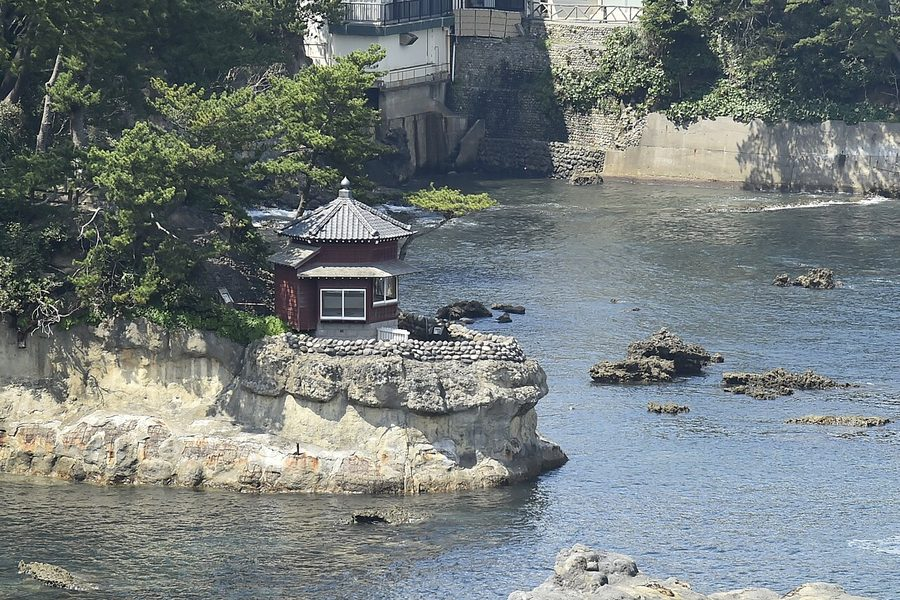
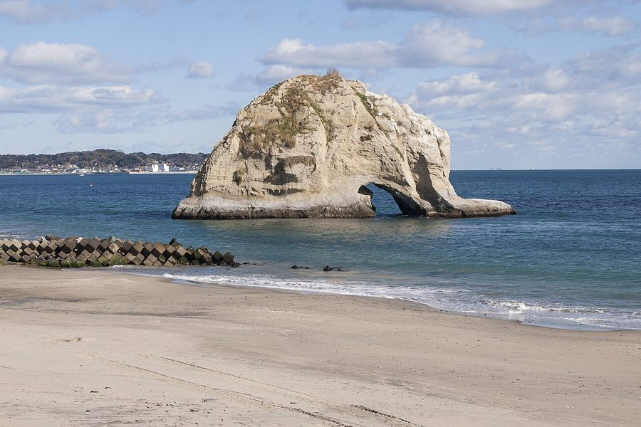
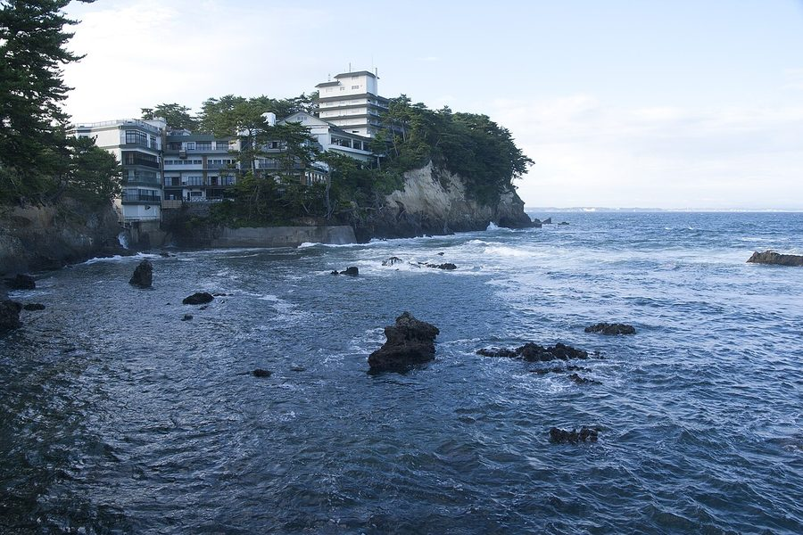

茨城県北茨城市の日帰り温泉・銭湯・サウナ（13件）
寄り道スポット検索アプリ「ヨッテコ」の収録データから、茨城県北茨城市の日帰り温泉・銭湯・サウナを営業時間・料金つきで一覧にしました（2026年8月時点）。
最も安いのは中郷温泉 通りゃんせ（700円）。最も遅くまで入れるのは源泉掛け流し&グランピング 五浦 幽谷隠田跡温泉（24:00まで）。朝風呂なら源泉掛け流し&グランピング 五浦 幽谷隠田跡温泉（7:00開店）。
茨城県北茨城市はどんなまち？
数字で見る🔍茨城県北茨城市
まちの横顔



- 地形と気候: 市域の大半は低い多賀山地の山林で、東は太平洋に面し、市街は海岸沿いの平地に広がっています。北はいわき市、南は高萩市に接し、県境をまたいだいわき市との結び付きも強いまちです。気候は温暖湿潤気候（Cfa）に属し、年平均気温は13.2℃です。
- 観光: 野口雨情の出身地であり、岡倉天心が愛でた五浦海岸を抱えるなど、美的な景勝地が多いまちです。天心と親交のあったインドの詩人タゴールも、このまちを訪れています。
寄り道充実度（全国偏差値）
偏差値・順位は、ヨッテコ収録データ（2026年8月時点・26,033件）を市区町村別に集計した施設数の全国分布（1,728市区町村）から毎回算出しています。カードを押すとカテゴリ別の分析に切り替わります。
日帰り温泉から見た茨城県北茨城市
日帰り温泉は市内に13件、全国233位タイ。上位2割に入ります。——上位2割——探せば見つかる、という位置。
- 露天風呂を備える店は38%。全国水準の46%より少なめです。露天よりも内湯——建物のなかでゆっくり浸かる湯が主流のようです。
- サウナがある店は23%で、全国水準（52%）を下回ります。サウナの有無で選ぶなら、先に確認しておきたい数字です。
- 21時以降も営業する店は15%で、全国水準（40%）を下回ります。立ち寄るなら日のあるうちに、と考えておくのが良さそうです。
出典: 施設データ=ヨッテコ収録データ（26,033件・2026年8月時点）。偏差値・全国順位・全国水準は全1,728市区町村の分布から毎回算出。 / 人口=総務省「住民基本台帳に基づく人口、人口動態及び世帯数」（2026年1月1日現在） / 面積=国土地理院「全国都道府県市区町村別面積調」（2026年4月1日時点） / 森林率=農林水産省「2025年農林業センサス（農山村地域調査）」市区町村別林野率（2025年、林野率（林野面積÷総土地面積）） / 年平均気温=気象庁「平年値（1991-2020年）」。市区町村の代表点（国土交通省「大字・町丁目レベル位置参照情報」）から最も近い観測点の値 / まちの解説=日本語版Wikipedia「北茨城市」（https://ja.wikipedia.org/wiki/北茨城市、2026年8月21日取得、CC BY-SA 4.0） / 写真=Wikimedia Commons（各キャプションに作者・ライセンスを記載）
曜日別の営業施設数
| 月 | 火 | 水 | 木 | 金 | 土 | 日 |
|---|---|---|---|---|---|---|
| 12 | 13 | 13 | 13 | 13 | 13 | 13 |
月曜日が最も休みが多く（各1件が定休）、年中無休は12件です。※営業時間データのある13件で集計
入浴料金の分布（大人）
| 501〜800円 | 1件 | |
| 801〜1,200円 | 5件 | |
| 1,201円以上 | 1件 |
料金が確認できた7件で集計。
施設一覧
| 施設 | 営業時間 | 料金（大人） |
|---|---|---|
| HARBORサウナ サウナ | 12:00〜18:30 ※曜日により異なる | 1,100円 |
| あんこうの宿 まるみつ旅館 天然温泉露天風呂 北茨城市平潟港の『あんこうの聖地』に位置する宿。常磐沖の新鮮なあんこうやメヒカリなどの地元の恵みを活かした料理が自慢。 | 11:00〜14:00 | — |
| としまや月浜の湯 天然温泉露天風呂 磯原温泉の柔らかなお湯で、心身の疲れを癒す。太平洋を眺める絶景の大浴場と露天風呂、幻想的な月を眺めながら入浴できる貸切露… | 11:00〜14:00 | 1,000円 |
| グランピングヴィレッジ IBARAKI サウナ グランピングヴィレッジ内に設置されたバレルサウナ。太平洋を目前に眺めながら、波音をBGMに外気浴でととのえます。 | 15:30〜20:20 | 2,200円 |
| 中郷温泉 通りゃんせ 天然温泉露天風呂サウナ ナトリウム・カルシウム一硫酸塩温泉で心地よく温まる。よく温まる泉質が特徴で、お風呂上りの後は畳の間でくつろげる。 | 10:00〜20:00 | 700円 |
| 五浦観光ホテル 別館 大観荘 天然温泉露天風呂 太平洋の眺望が素晴らしい源泉かけ流しの露天風呂。ナトリウムカルシウム塩化物泉で、神経痛や疲労回復に効果。貸切露天風呂でプ… | 18:20〜24:00 | 1,100円 |
| 公共の宿 マウントあかね 北茨城市の高台にある公共の宿。絶景とともに展望浴室でくつろげ、北茨城市の街並みや太平洋の日の出を眺望できる宿泊施設です。 | 10:00〜14:00 | — |
| 岩盤浴と十割蕎麦 ゆずりはの湯 北茨城市唯一の岩盤浴施設。館内に食事処があり、十割蕎麦や自家製行者にんにく料理、北茨城名物あんこう鍋を提供 | 10:00〜17:00（月休） | 1,100円 |
| 平潟港温泉 友の湯旅館 天然温泉 平潟港温泉の宿。国道すぐそばながら秘湯の雰囲気を備えた隠れ宿。地元漁港で水揚げされた新鮮な魚介類が自慢。 | 11:00〜21:00 | — |
| 海の露天風呂 湯かっぺ 太平洋を望む露天風呂が自慢の日帰り温浴施設。バイオ機能水を活用した特殊な浴室。 | 15:00〜21:00 ※曜日により異なる | 1,000円 |
| 温泉民宿 かね久 天然温泉 平潟港温泉の宿で、源泉掛け流しの温泉が特徴。平潟の港町で新鮮な魚介類（特にあんこうとヒラメ）を活かした料理が自慢。 | 09:00〜18:00 | — |
| 温泉民宿 魚彦 天然温泉 平潟港の新鮮な魚料理と100%天然温泉が特徴の温泉民宿。家族営業で地魚を得意とし、旬の魚の刺身盛りや寒い季節限定のあんこ… | 09:00〜18:00 | — |
| 源泉掛け流し&グランピング 五浦 幽谷隠田跡温泉 天然温泉露天風呂 五浦の棚田跡地に位置するグランピング・コテージ施設。源泉掛け流しの温泉（内湯・外湯）が特徴。岡倉天心に愛された五浦の自然… | 07:00〜24:00 | — |